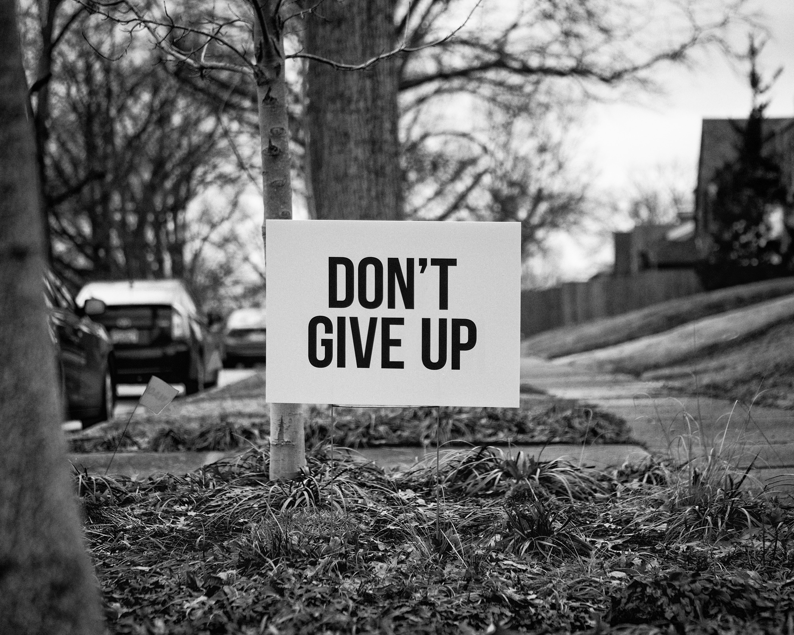

학원 상담을 할 때에 먼저 대부분 물어보는 것이 '왜 전공자도 아닌데 이 분야를 수강하고 싶으신거죠?' 였다.
당연히 이유가 있었다. 일단 나는 내가 개발할 수 있는 혹은 개발해 나갈 수 있는 '기술'이 간절했다. 앞서 말했던 것과 같이 조금만 꿈쩍하면 아무 것도 배우지 않은 일반인들이 쉽게 들어와서 5년 넘게 일했던 나를 비교적 쉽게 대체할 수 있는 것을 원치 않았다.
나는 나여야만 하는 혹은 내가 가더라도 일반인들이 나를 쉽사리 대체할 수 없는 그런 직업을 원했다.
사실 고민도 많이 했다. 엄청 많이 했다. 웹을 국비로 배우면 나는 29. 그리고 취업도 해야 한다. 캐나다에서 막 돌아와서 사무직에 이력서를 뿌렸을 때 면접을 보고, 입사 제의를 받은 곳은 3곳. 모두 인사부였다.
제발, 간절히 바란다. '내가 차라리 거기에서 일을 했었다면 시간을 절약할 수 있었을 텐데...' 라는, 그런 후회를 되뇌이지 않길 바란다. 시발. 진짜 무섭다.